|
|
eCourts Portal of Western Australia - Help: eLodgment |

Lodge an Originating Document
01. From the eLodgment main menu click Lodge a Document.

The Type of Document Lodgment screen displays.
02. Select the jurisdiction you wish to lodge into from the drop-down box.
The jurisdiction is selected.
If you are lodging into the Children’s Court, District Court, or the Magistrates Courts you will also need to select a location.
If you are lodging into the Supreme Court, you can choose the Division of either Civil or Appeal.
03. Either click on the Please select the type of document to be lodged drop down, scroll through the document list and select the relevant one; or click into the field, type in the document’s name, and then click on the relevant one when it appears.
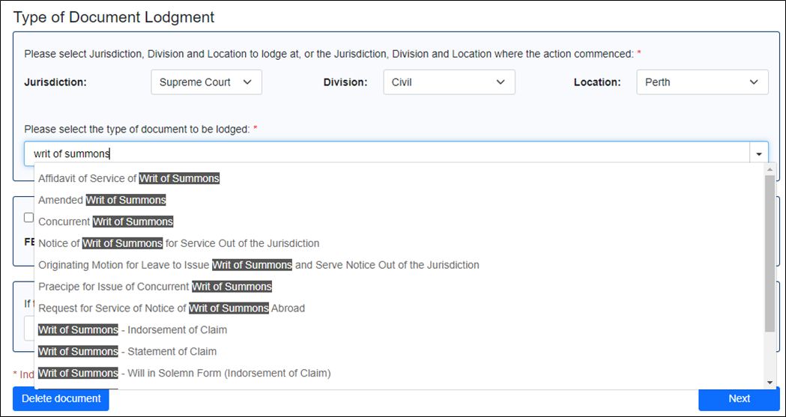
The selected document appears in the field.
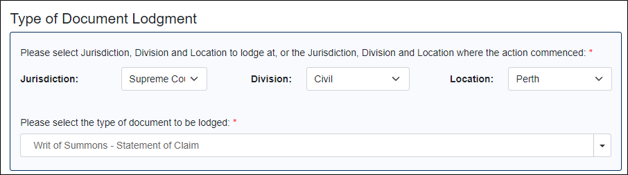
04. Click the Next button.
The Contact Information For This Lodgment screen is displayed.
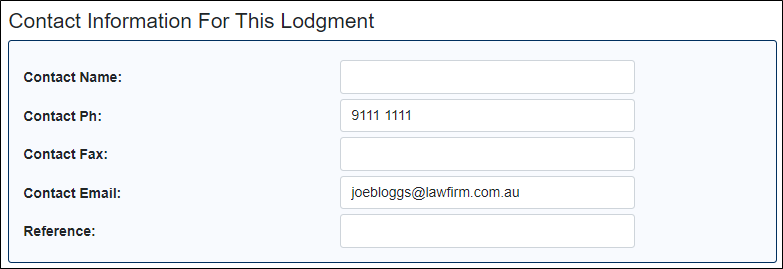
If your firm has a phone number, fax number and an email address recorded against it in the court’s system then these details automatically populate.
05. Complete/update all the fields as necessary.
06. Click the Next button.
The Add Plaintiff/Applicant/Appellant screen displays.
07. Select the type of party.
The fields below change slightly depending on the party type.
08. Enter the details for the party (including their address).
09. Click Next.
A summary screen showing the party entered (along with their role and named position) appears.
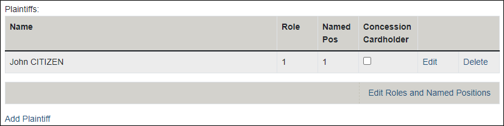
10. If you need to add extra plaintiffs then click the Add Plaintiff link. As many parties can be added as necessary.
All the plaintiffs/applicants/appellants to the matter have been listed.
11. Use the Edit Roles and Named Positions link to amend these fields for each of the parties as necessary.
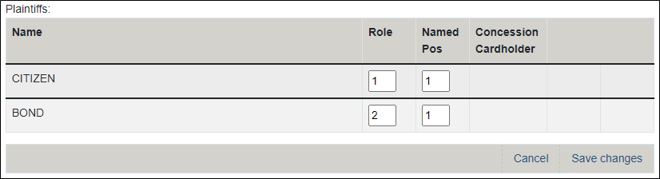
Each of the parties has the correct role and position number assigned to them.
12. If all the applying parties have a valid concession card, then you may be entitled to pay a reduced lodgment fee. To apply, tick the Concession Cardholder box against all the applying parties.
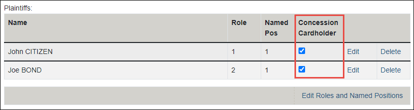
NOTE: If you only tick one party and click Next then the below message will appear. Click OK to the message will continue the wizard without applying for the reduced fee.
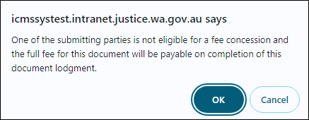
13. Click the Next button.
If the Concession Card boxes were NOT ticked on all the applying parties, then the Add Defendant/Respondent screen appears.
Otherwise, the Concession Card Details screen appears.
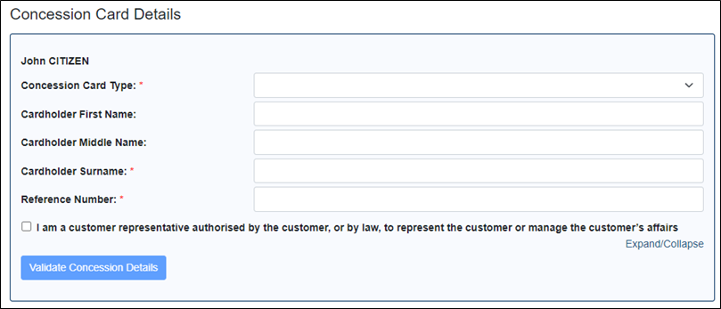
14. If the Concession Card Details screen appears, then complete the fields for each party, including authorising the release of information, and clicking the Validate Concession Details button.
After clicking Next in the Concession Card Details screen the Add Defendant/Respondent screen appears.
15. Just as was done for the first plaintiff, enter the details of the first defendant (including the Distance from Perth/Service Type field) and then click Next.
NOTE: District and Supreme Court use the Distance from Perth field, whereas the Magistrates Court uses the Service Type field.
A summary screen showing the party entered (along with their role and named position) appears.
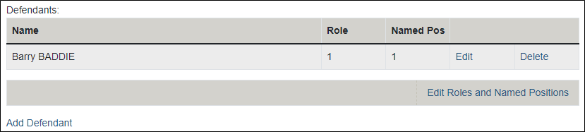
16. Add additional defendants/respondents and amend their role/positions numbers as necessary.
All the defendants/respondents to the matter have been listed and each of the parties has the correct role and position number assigned to them.
17. Click the Next button.
The system displays the next screen of the lodgement wizard, though what this screen is depends on what document type you are lodging. A commonly used screen is the Particulars of Claim. This screen will also look slightly different depending on the document type/jurisdiction.
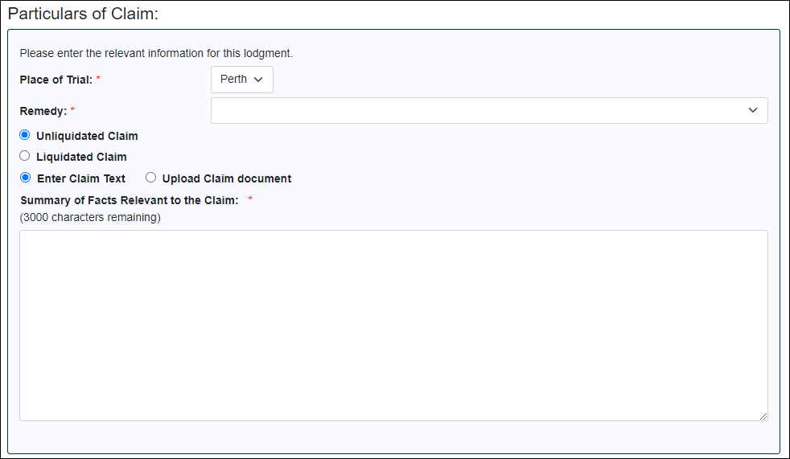
18. However, regardless of what screen appears, you now must navigate through each of them in turn and complete all fields as necessary.
The wizard has finished once the Batch Details screen appears.
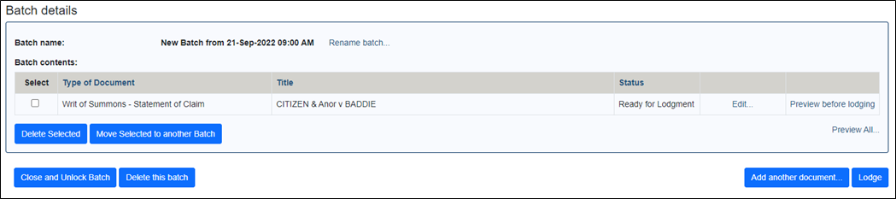
At this stage you can perform the following actions:
- Rename the document batch
- Delete the document
- Edit the document
- Move the document to another (pending) batch
- Add another document to the batch
- Delete the entire batch
- Lodge the batch
19. One thing that you must do is click the Preview Before Lodging link to the right of the document.
The rendered document is downloaded and appears at the bottom of your browser.
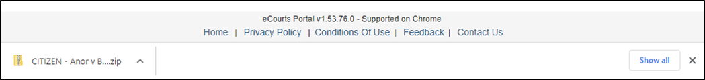
20. Click on the download.
A folder window appears, with the document listed.
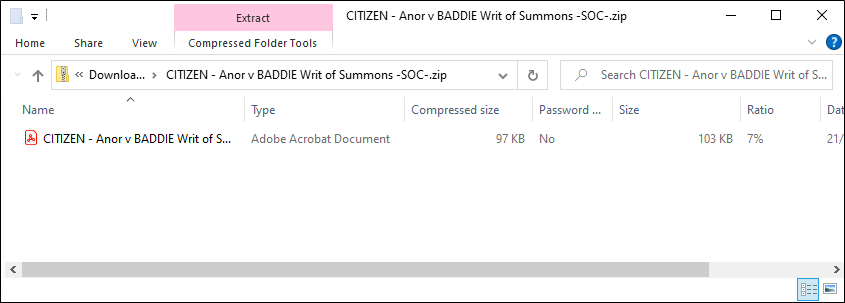
21. Double click on the document in the WinZip window.
The document opens in PDF.
22. Review the content of the PDF.
Once reviewed close the PDF and WinZip window. Now you can choose to edit the document in eLodgment to correct any errors, add more documents to the batch, or lodge the batch.
NOTE: If you choose to add another document to the batch it must be for the same jurisdiction/division/location of the first document.
23. Once your batch is ready for lodgment click the Lodge button.
If a fee is required to lodge the batch, then the Payment screen displays.
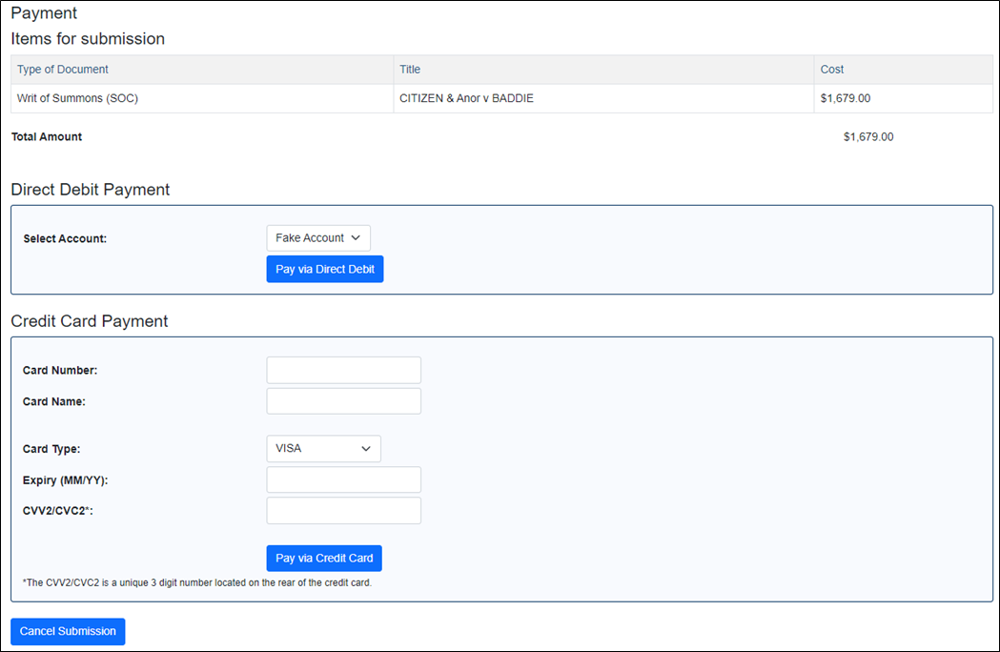
24. If your law firm/organisation as a direct debit account set up then you can choose to click Pay via Direct Debit. Otherwise enter valid credit card details and click Pay via Credit Card.
The Batch Processing screen appears.
25. Leave this screen open until it says Batch Complete.
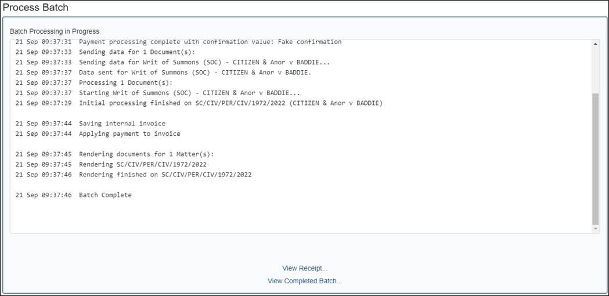
You can view the completed batch and the receipt from here.